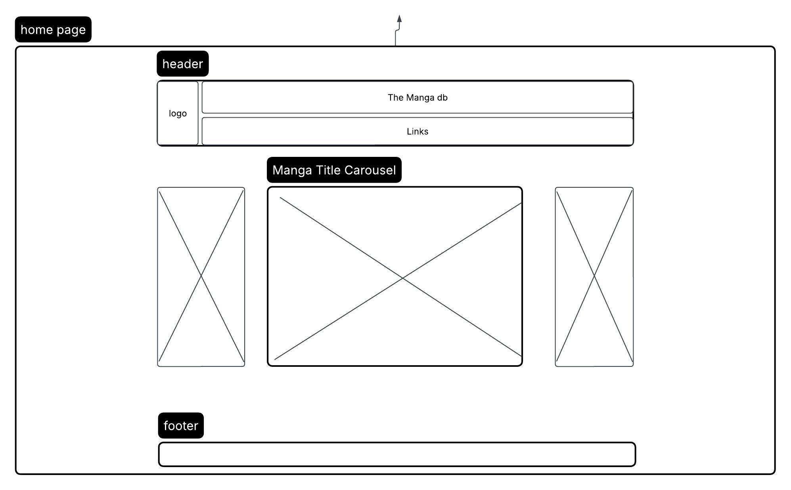

Logo
NOTE*** I have used ChatGPT to create the logo
NOTE*** I have used ChatGPT to create the logo
The site will be called the manga db the name was chosen to inform the user what the site is much like TMDB, TVDB, TPDB, etc
The site will ba a data base of manga titles and their inndividual volumes
The purpose of the site is to catalogue varois managa titles and volumes available for that title.
questions this site can answer.
how many volumes of the selected title are there?
are omnnibus books available for the selected title?
What does the cover of a specific title look like?
